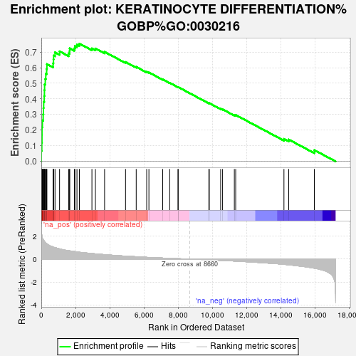
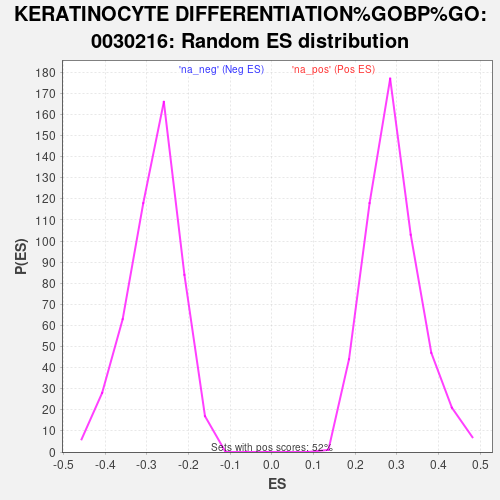

| | | Dataset | Tumour_vs_PDO |
| Phenotype | NoPhenotypeAvailable |
| Upregulated in class | na_pos |
| GeneSet | KERATINOCYTE DIFFERENTIATION%GOBP%GO:0030216 |
| Enrichment Score (ES) | 0.75392896 |
| Normalized Enrichment Score (NES) | 2.588737 |
| Nominal p-value | 0.0 |
| FDR q-value | 0.0 |
| FWER p-Value | 0.0 |
Table: GSEA Results Summary

Fig 1: Enrichment plot: KERATINOCYTE DIFFERENTIATION%GOBP%GO:0030216
Profile of the Running ES Score & Positions of GeneSet Members on the Rank Ordered List
| SYMBOL | RANK IN GENE LIST | RANK METRIC SCORE | RUNNING ES | CORE ENRICHMENT | | 1 | KRT6A | 2 | 2.788 | 0.0684 | Yes |
| 2 | KLK5 | 29 | 2.141 | 0.1195 | Yes |
| 3 | KRT6B | 39 | 2.026 | 0.1687 | Yes |
| 4 | SPRR1A | 41 | 2.008 | 0.2180 | Yes |
| 5 | KRT4 | 63 | 1.865 | 0.2626 | Yes |
| 6 | EPHA2 | 110 | 1.695 | 0.3016 | Yes |
| 7 | KRT5 | 125 | 1.670 | 0.3418 | Yes |
| 8 | KRT78 | 139 | 1.648 | 0.3815 | Yes |
| 9 | IVL | 171 | 1.579 | 0.4185 | Yes |
| 10 | SPRR3 | 183 | 1.557 | 0.4561 | Yes |
| 11 | EVPL | 193 | 1.535 | 0.4933 | Yes |
| 12 | FLG | 233 | 1.477 | 0.5273 | Yes |
| 13 | SCEL | 262 | 1.420 | 0.5606 | Yes |
| 14 | SPRR1B | 313 | 1.361 | 0.5911 | Yes |
| 15 | KRT16 | 328 | 1.337 | 0.6232 | Yes |
| 16 | CSTA | 690 | 1.060 | 0.6281 | Yes |
| 17 | DSP | 711 | 1.047 | 0.6527 | Yes |
| 18 | EXPH5 | 721 | 1.041 | 0.6778 | Yes |
| 19 | KRT10 | 802 | 1.006 | 0.6978 | Yes |
| 20 | ABCA12 | 1067 | 0.897 | 0.7044 | Yes |
| 21 | CASP3 | 1601 | 0.738 | 0.6915 | Yes |
| 22 | TGM1 | 1653 | 0.725 | 0.7063 | Yes |
| 23 | BCR | 1658 | 0.724 | 0.7239 | Yes |
| 24 | KRT80 | 1933 | 0.664 | 0.7242 | Yes |
| 25 | EREG | 1967 | 0.657 | 0.7385 | Yes |
| 26 | KRT75 | 2084 | 0.636 | 0.7473 | Yes |
| 27 | ST14 | 2226 | 0.603 | 0.7539 | Yes |
| 28 | GRHL2 | 2958 | 0.487 | 0.7233 | No |
| 29 | CDH3 | 3161 | 0.461 | 0.7228 | No |
| 30 | KRT7 | 3698 | 0.390 | 0.7011 | No |
| 31 | PPP3CA | 4922 | 0.263 | 0.6363 | No |
| 32 | POU2F3 | 5545 | 0.209 | 0.6051 | No |
| 33 | ANXA1 | 6158 | 0.157 | 0.5733 | No |
| 34 | UGCG | 6288 | 0.149 | 0.5694 | No |
| 35 | ASAH1 | 7092 | 0.093 | 0.5249 | No |
| 36 | JAG1 | 7501 | 0.066 | 0.5027 | No |
| 37 | S100A7 | 7989 | 0.039 | 0.4753 | No |
| 38 | AKR1C3 | 7996 | 0.038 | 0.4758 | No |
| 39 | PIP5K1A | 9791 | -0.063 | 0.3728 | No |
| 40 | MED1 | 9815 | -0.065 | 0.3730 | No |
| 41 | WNT5A | 10480 | -0.109 | 0.3370 | No |
| 42 | ADAM9 | 10591 | -0.117 | 0.3334 | No |
| 43 | KRT81 | 11279 | -0.168 | 0.2975 | No |
| 44 | CLIC4 | 11357 | -0.174 | 0.2973 | No |
| 45 | TXNIP | 14177 | -0.457 | 0.1441 | No |
| 46 | OPN3 | 14455 | -0.497 | 0.1402 | No |
| 47 | KRT86 | 15953 | -0.794 | 0.0724 | No |
Table: GSEA details [plain text format]

Fig 2: KERATINOCYTE DIFFERENTIATION%GOBP%GO:0030216: Random ES distribution
Gene set null distribution of ES for KERATINOCYTE DIFFERENTIATION%GOBP%GO:0030216